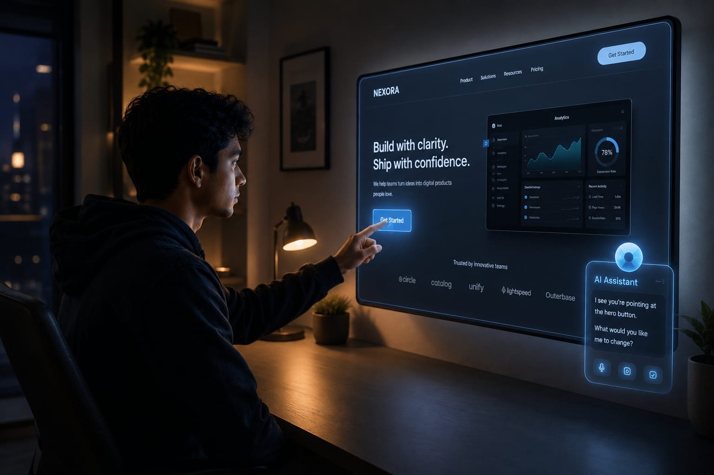

Computers were built for humans to operate. AI may turn them into systems humans simply direct.

I was staring at my screen today and something felt off.
Not about what was on the screen. About the way I was interacting with it.
I had my hands on a keyboard. A mouse nearby.
And I realized — this is still the same dance we've been doing for decades.
I move the mouse. I click. I type. The computer responds. I adjust. Repeat.
It works.
But it always feels like I am the one adapting.
Like the machine sets the rules — and I learn them.
What if you could just... point?
You're looking at a design on your screen. Something about it doesn't feel right.
And instead of:
opening a tool, navigating menus, typing prompts, adjusting sliders, dragging layers —
you simply raise your finger and point at the screen.
“This part feels too cold.”
The computer sees where your finger is aimed.
It hears what you said.
It understands that you are not describing a technical modification.
You are describing a feeling.
And somehow — it understands what you mean.
It changes the design.
You look again.
“Pull it back a little.”
It pulls it back.
No menus. No tools. No software workflows.
Just intention.
I don't know why this thought hit me so hard.
Maybe because it's the first time I imagined a computer that doesn't force humans to translate thoughts into machine language.
You simply think out loud.
And the machine follows.
That feels less like operating software.
And more like directing intelligence.
Right now, the operating system sits between humans and hardware.
It manages:
files, memory, applications, networking, permissions, processes, windows.
It is essentially the brain of the computer.
But it is a rigid brain.
It follows fixed logic. Fixed interfaces. Fixed workflows.
The OS itself does not understand intent.
Humans still orchestrate everything manually.
What if the layer managing your computer was not a traditional operating system at all?
What if it was an intelligent agent?
An LLM with access to:
the file system, applications, memory, networking, browsers, APIs, hardware, sensors — everything the OS currently controls.
But instead of executing rigid rules, it reasons.
It understands context.
It remembers what you care about.
It makes judgment calls.
It understands goals — not just commands.
Human → Agent → Computer
That changes the architecture of computing entirely.
Right now we think in terms of apps.
We open:
Chrome. Photoshop. VSCode. Finder. Figma. Notion.
But maybe future users won't think in applications at all.
Maybe they interact mainly with one persistent intelligence layer — and that layer decides which tools to use underneath.
Applications stop becoming destinations.
They become backend capabilities used by agents.
The biggest transformation may not be AI-generated images.
Or AI coding.
Or AI search.
It may simply be this:
Humans stop operating computers directly.
For decades, humans learned how to think like machines.
Future machines may finally learn how to understand humans instead.
I genuinely cannot look at a keyboard and mouse the same way anymore.
They suddenly feel transitional.
Like command lines before graphical interfaces.
Necessary once. Obvious once. But temporary.
And now I can't stop wondering:
What even is an operating system if the thing managing your computer can understand you?